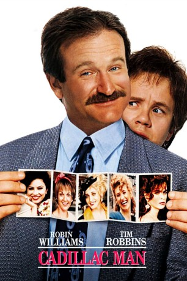
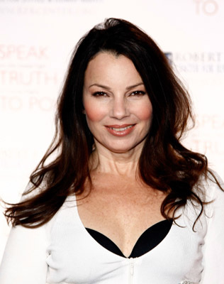
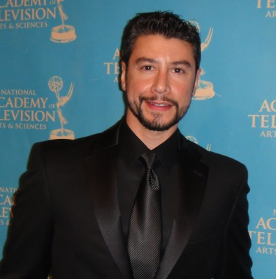
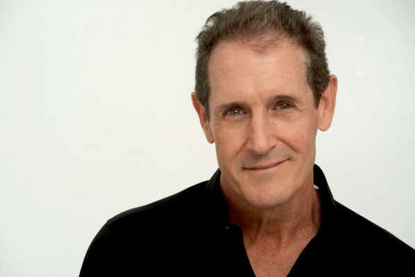

#11075 Cadillac Man
 
 IMDB-Wertung: 5.6 / 10
IMDB-Wertung: 5.6 / 10  Tomatometer: 55
Tomatometer: 55  Metascore: 50
Metascore: 50 
Der Arbeitstag des gestreßten Autoverkäufers Joey O'Brian fängt miserabel an: Sein Chef setzt ihm ein Ultimatum. Entweder er verkauft innerhalb von 24 Stunden zwölf Wagen oder, er kann seine Papiere abholen. Doch das ist nicht sein einziges Problem: Joey unterhält zahlreiche Affären mit Kundinnen, die ihn ausgerechnet jetzt alle festnageln wollen. Dann sitzt ihm auch noch eine kaltschnäuzige Ex-Frau im Nacken, die mehr Unterhalt für den College-Besuch der gemeinsamen Tochter will. Da passiert es: Mitten in ohnehin schon chaotische Verkaufsverhandlungen platzt ein amoklaufender Vorstadt-Othello mit einer MG im Anschlag und nimmt alle Anwesenden als Geiseln. Irgend jemand hat es mit seiner treulosen Gattin Donna getrieben, der Sekretärin des Unternehmens, und nun sollen alle dafür büßen. Jetzt kann Joey zeigen, was in ihm steckt....
Jahr: 1990
Dauer: 89 Minuten
FSK: 16
Land: USA Studio: Orion PicturesTonspuren:
Untertitel:
Auflösung: 1080p (1920x1080) Größe: 7598 MB
Genre: Komödie, Krimi
Regisseur: Roger Donaldson
Drehbuch: Ken Friedman
Soundtrack: J. Peter Robinson
Darsteller:
 Robin Williams als Joey O'Brien
Robin Williams als Joey O'Brien Tim Robbins als Larry
Tim Robbins als Larry Pamela Reed als Tina
Pamela Reed als Tina-  Fran Drescher als Joy Munchack
- Zack Norman als Harry Munchack
- Lori Petty als Lila
 Annabella Sciorra als Donna
Annabella Sciorra als Donna Paul Guilfoyle als Little Jack Turgeon
Paul Guilfoyle als Little Jack Turgeon Eddie Jones als Benny
Eddie Jones als Benny- Tristine Skyler als Lisa
- Judith Hoag als Molly
 Lauren Tom als Helen the Dim Sum Girl
Lauren Tom als Helen the Dim Sum Girl Paul Herman als Tony Dipino
Paul Herman als Tony Dipino Paul J.Q. Lee als Henry
Paul J.Q. Lee als Henry Erik King als Davey
Erik King als Davey- Boris Lyoskin als Soviet Husband
- Elzbieta Czyzewska als Soviet Wife
- Ben Lin als Asian Husband
 Wai Ching Ho als Asian Wife
Wai Ching Ho als Asian Wife Bill Nunn als Grave Digger
Bill Nunn als Grave Digger-  Vince Cupone als Louie
 Kim Chan als Dim Sum Cook
Kim Chan als Dim Sum Cook- Kenneth Simmons als Steel Jaw #3
 Bunny Levine als Woman Customer
Bunny Levine als Woman Customer Philip Moon als Nightclub Selector
Philip Moon als Nightclub Selector- Merwin Goldsmith als Showroom Buyer
- Ken Kensei als Japanese Buyer #4
 Elaine Stritch als Widow
Elaine Stritch als Widow-  Jack Mulcahy als S.W.A.T. Team Officer
 Carl Burrows als Spectator (uncredited)
Carl Burrows als Spectator (uncredited)- Barry Godin als Police Officer (uncredited)
- Richard J. Grund als ESU Officer (uncredited)
- Jim Lavin als Hostage Cop (uncredited)
 Ron Ostrow als Police Officer (uncredited)
Ron Ostrow als Police Officer (uncredited)- Bill Nelson als Big Jack Turgeon
- Mimi Cecchini als Ma
- Anthony Powers als Captain Mason
- James Bulleit als Funeral Director
- Richard Panebianco als Frankie Dipino
- Gary Howard Klar als Detective Walters
- William Hugh Collins als Hearse Driver
- Bill Moor als Antique Salesman
- Mario Todisco als Steel Jaw #1
- Max als Steel Jaw #2
- Carmen A. Mathis als Police Woman
- Harlan Cary Poe als Mason's Aid
- Jordan Derwin als Paramedic
- Sal Lioni als Nightclub Customer
- Brian Sanet als Paparazzi
- Richard Mark Arnold als Porsche Buyer
Datei: X:\1990\Cadillac Man (1990, FSK16, 1920x1080).mkv seit 24.04.2019
Festplatte: Gemischt-01+Anime
 Es gibt insgesamt 52 Filme in der Gruppe '1990'
Es gibt insgesamt 52 Filme in der Gruppe '1990'